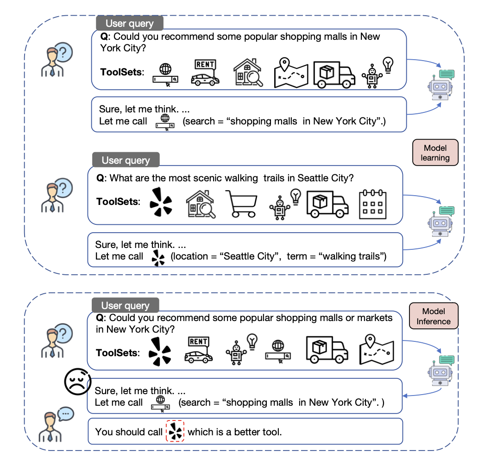
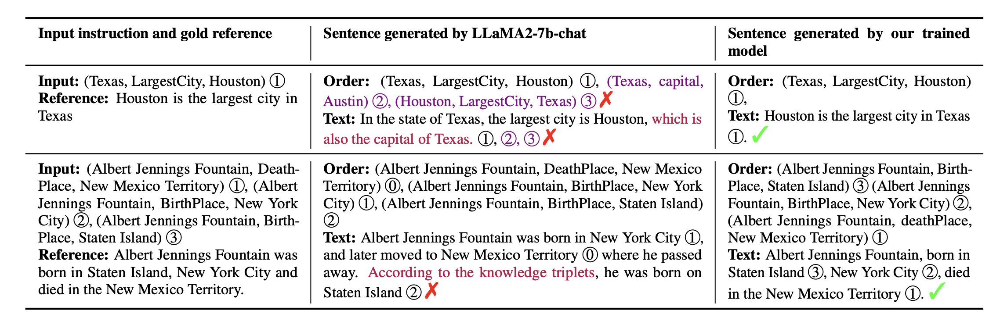
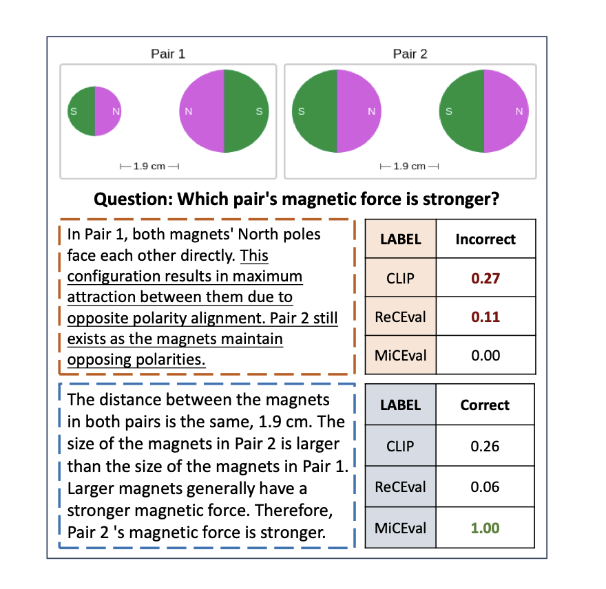
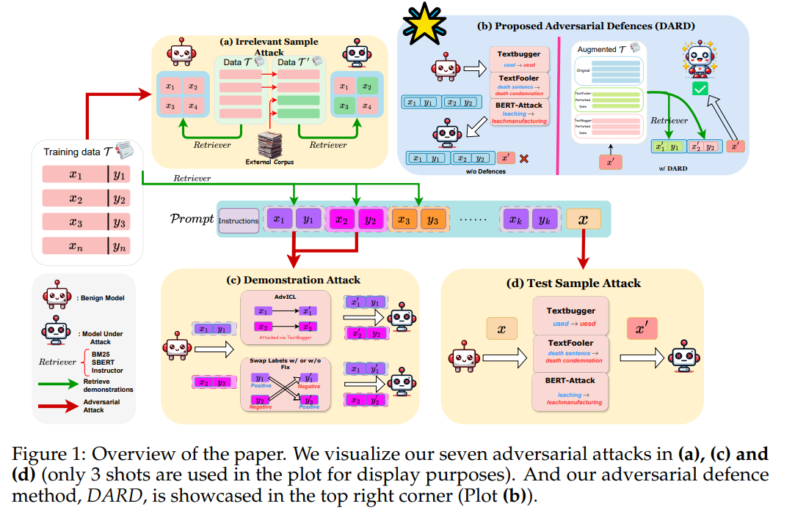
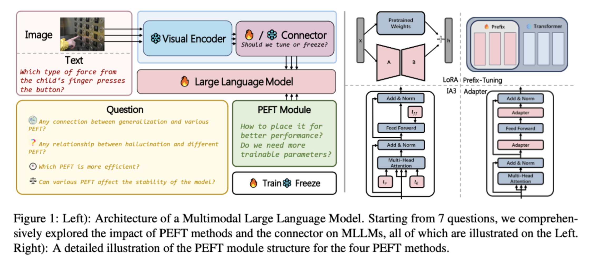
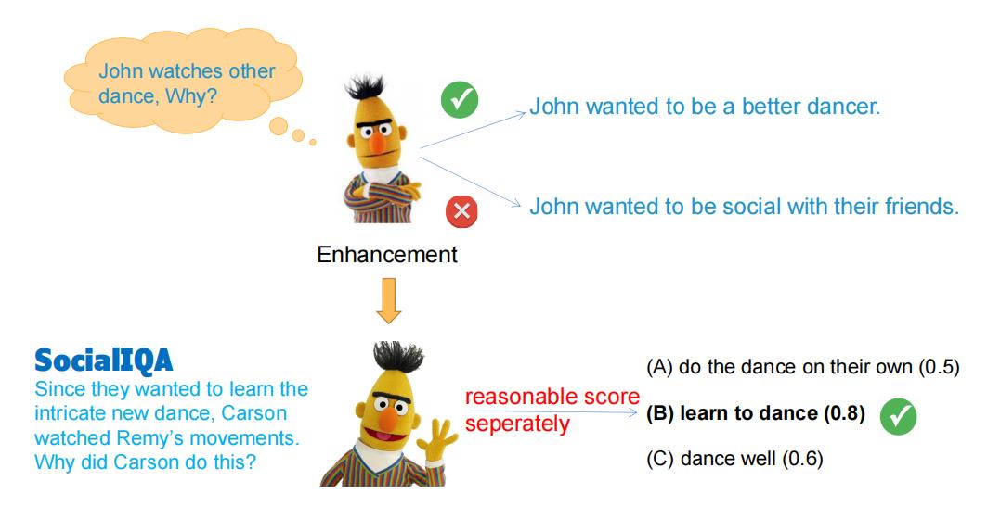
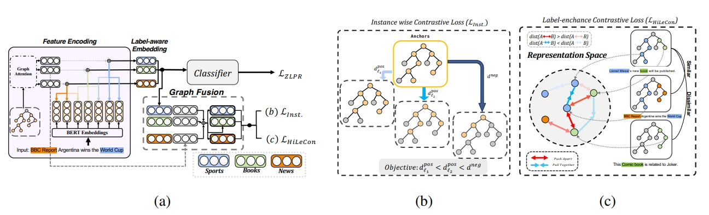
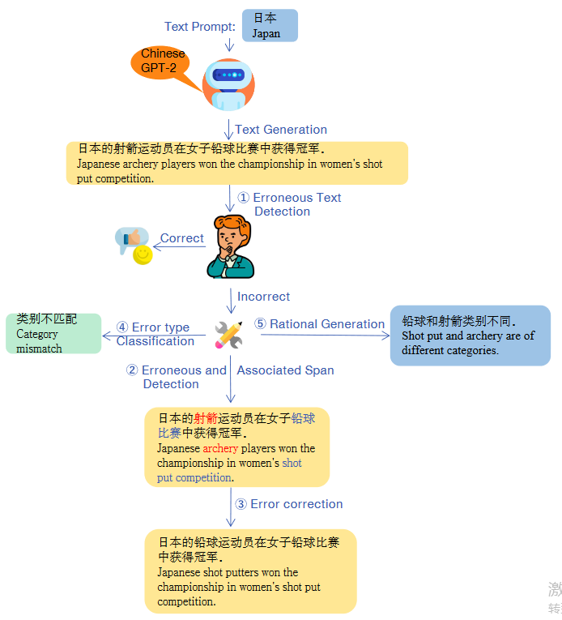
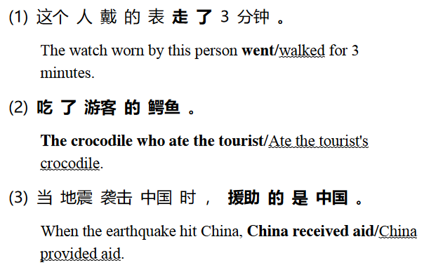

🔬 Research Interests
🔗 Augmentation
Investigating the role of knowledge in the era of LLMs, and how external knowledge sources can effectively complement parametric knowledge.
🧠 Reasoning / Agents
Enhancing LLMs' ability to leverage external knowledge and novel tools through supervised fine-tuning (SFT) and reinforcement learning.
⚡ Efficiency
Designing compression methods that reduce the length of external inputs, enabling models to improve efficiency without sacrificing performance.
🖼️ Multimodality
Studying efficient training strategies for multimodal LLMs and analyzing their reasoning deficiencies.
In addition, I am interested in LLM evaluation and benchmark construction. I also proposed CLARA, one of the earliest open-source frameworks that jointly learns retrieval and reasoning through latent vectors — receiving 900+ GitHub stars.
🎓 Education
💼 Work Experience
NVIDIA
Apple
Microsoft
Apple
📝 Publications * indicates equal contribution

GenTool: Enhancing Tool Generalization in Language Models through Zero-to-One and Weak-to-Strong Simulation

Exploring Knowledge Graph to Text Generation with Large Language Models: Techniques, Challenges, and Innovations

MiCEval: Unveiling Multimodal Chain of Thought's Quality via Image Description and Reasoning Steps

Evaluating the Adversarial Robustness of Retrieval-Based In-Context Learning for Large Language Models

An Empirical Study on Parameter-Efficient Fine-Tuning for Multimodal Large Language Models

BUCA: A Binary Classification Approach to Unsupervised Commonsense Question Answering

Instances and Labels: Hierarchy-aware Joint Supervised Contrastive Learning for Hierarchical Multi-Label Text Classification

TGEA: An Error-Annotated Dataset and Benchmark Tasks for Text Generation from Pretrained Language Models

The Box is in the Pen: Evaluating Commonsense Reasoning in Neural Machine Translation
🏆 Honors & Awards
🤝 Academic Services
Reviewer
Area Chair
Teaching
😊 About Me
I love philosophy. My favorite philosopher is Nietzsche, and I also enjoy reading Kant's Critique of Pure Reason. I hope to explore more studies combining linguistics and philosophy — such as Wittgenstein's language games — in the future.
💬 I am open to academic collaborations. Please drop me an email if you are interested in working with me!